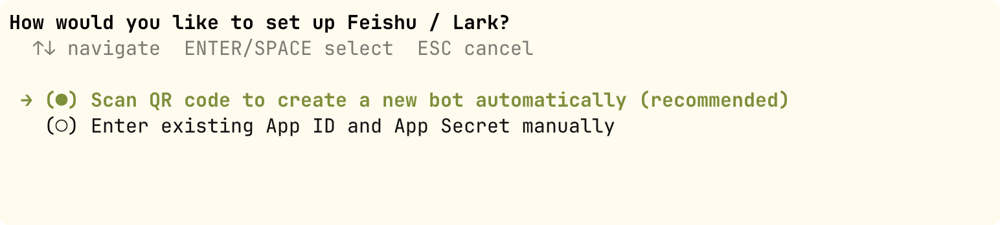

Hermes Agent プラットフォームメッセージ連携
メッセージゲートウェイ（Messaging Gateway）により、同じ Agent（エージェント）が——同じ記憶、スキル、ツール——を 20+ のプラットフォームでシームレスに動作します。
本章では、Gateway の設定とデプロイ、セッションライフサイクル、マルチユーザー分離ポリシー、およびセキュリティアクセス制御について説明します。
メッセージゲートウェイ概要
メッセージゲートウェイは常駐バックグラウンドプロセスであり、すべてのメッセージプラットフォームの接続、セッション、定期タスク、メディア配信を統一的に管理します。
CLI で Agent に教えたすべての内容——記憶、スキル、好み——は、すべてのプラットフォームで完全に同じです。
対応プラットフォーム
Hermes は 20+ のメッセージプラットフォームに対応しています：CLI、Telegram、Discord、Slack、WhatsApp、Signal、Matrix、Mattermost、Email、SMS、钉钉（DingTalk）、飞书/Lark（Feishu/Lark）、企业微信（WeCom）、微信（WeChat）、QQ、元宝（Yuanbao）、BlueBubbles（iMessage）、Home Assistant、Microsoft Teams、Google Chat など。
プラットフォーム機能比較
| プラットフォーム | 音声 | 画像 | ファイル | メッセージスレッド | 絵文字リアクション | タイピングインジケーター | ストリーミング出力 |
|---|---|---|---|---|---|---|---|
| Telegram | 対応 | 対応 | 対応 | 対応 | — | 対応 | 対応 |
| Discord | 対応 | 対応 | 対応 | 対応 | 対応 | 対応 | 対応 |
| Slack | 対応 | 対応 | 対応 | 対応 | 対応 | 対応 | 対応 |
| — | 対応 | 対応 | — | — | 対応 | 対応 | |
| Signal | — | 対応 | 対応 | — | — | 対応 | 対応 |
| 飞书/Lark | 対応 | 対応 | 対応 | 対応 | 対応 | 対応 | 対応 |
| 企业微信 | 対応 | 対応 | 対応 | — | — | — | — |
| 钉钉 | — | 対応 | 対応 | — | 対応 | — | 対応 |
| Microsoft Teams | — | 対応 | — | 対応 | — | 対応 | — |
| — | 対応 | 対応 | 対応 | — | — | — | |
| SMS | — | — | — | — | — | — | — |
| Matrix | 対応 | 対応 | 対応 | 対応 | 対応 | 対応 | 対応 |
クロスプラットフォームセッション継続性：同じ Agent が異なるプラットフォーム間でもコンテキストを維持できます。例えば、Telegram で Agent と会話の途中でも、Discord に切り替えても Agent は以前の会話を覚えています。
Gateway の起動と設定
デスクトップ版の設定
左側メニューの「メッセージプラットフォーム」を開くと、対応しているプラットフォームが表示されます。該当プラットフォームをクリックして設定できます：

対話モードでの設定
対話型ウィザードを使用して、すべてのプラットフォームの初期設定を完了します：
hermes gateway setup

ウィザードは各プラットフォームの設定を案内します：プラットフォームの選択、Bot Token の入力、許可ユーザーリストの設定など。
例えば飞书（Feishu）を選択すると、QRコードスキャンによるボット作成または APP ID による作成を選択できます：

ゲートウェイ管理コマンド
例
hermes gateway
# ユーザーレベルのシステムサービスとしてインストール（Linux systemd / macOS launchd）
hermes gateway install
# Linux：起動時に自動起動するシステムサービスとしてインストール
sudo hermes gateway install --system
# サービス制御
hermes gateway start # サービスを起動
hermes gateway stop # サービスを停止
hermes gateway restart # サービスを再起動
hermes gateway status # サービスの状態を確認
Telegram Bot 接続の実践
Telegram を例に、完全な Bot 接続フローを実行します。
ステップ1：Telegram Bot を作成します。
Telegram で @BotFather を検索し、/newbot コマンドを送信して、プロンプトに従って Bot の名前とユーザー名を設定します。
BotFather は Bot API Token を返します。形式は次のようになります：1234567890:ABCdefGHIjklMNOpqrsTUVwxyz。
ステップ2：Hermes Gateway を設定します。
例
# Telegram プラットフォーム設定
platforms:
telegram:
enabled: true
bot_token: "1234567890:ABCdefGHIjklMNOpqrsTUVwxyz"
# オプション：許可するユーザー ID リスト（ホワイトリストモード）
allowed_users:
- "123456789"
# オプション：グループ内で @メンション された場合のみ応答するかどうか
require_mention: true
# オプション：@メンション が不要なチャンネルリスト
free_response_channels:
- "-1001234567890"
ステップ3：起動してテストします。
例
hermes gateway start
# Telegram で自分の Bot にメッセージを送信してテスト
初回接続時はホワイトリストモード（allowed_users）を使用して、自分のアカウントのみが Agent と対話できるようにし、正常に動作することを確認してから他の人に開放することをお勧めします。
プラットフォーム内で使用可能なスラッシュコマンド
どのメッセージプラットフォームでも、以下のコマンドを使用できます：
| コマンド | 機能 |
|---|---|
| /new または /reset | 新規セッションを開始 |
| /model [名称] | モデルの表示または切り替え |
| /retry | 前のメッセージを再試行 |
| /undo | 前のターンの会話を取り消す |
| /stop | 現在のタスクを中断 |
| /approve / /deny | 危険なコマンドを承認/拒否 |
| /background <タスク> | バックグラウンドセッションでタスクを実行 |
| /status | 現在のセッション情報を表示 |
| /usage | 今回のセッションのトークン使用量を表示 |
| /voice [on/off/tts] | 音声返信を制御 |
| /compress | 会話コンテキストを手動で圧縮 |
| /resume [タイトル] | 以前に名前を付けたセッションを再開 |
| /<skill-name> | インストール済みの任意のスキルを呼び出す |
| /reload-mcp | MCP サーバーをリロード |
| /update | Hermes を最新バージョンに更新 |
| /help | 利用可能なすべてのコマンドを表示 |
セッションライフサイクル
Session は Hermes Gateway における対話管理の中核概念です。
Session の仕組みを理解することで、適切なセッション分離ポリシーとリセットルールを設定するのに役立ちます。
SessionSource：メッセージソース記述子
Gateway に入る各メッセージには SessionSource が付随しており、このメッセージが「どこから来たのか」を記録しています。
| フィールド | 型 | 説明 |
|---|---|---|
| platform | string | プラットフォーム名（telegram、discord、slack など） |
| chat_id | string | セッション識別子（DM ID、グループ ID、チャンネル ID） |
| chat_type | string | セッションタイプ：dm（ダイレクトメッセージ）、group（グループ）、channel（チャンネル）、thread（スレッド） |
| user_id | string | メッセージ送信者のプラットフォーム ID |
| user_name | string | メッセージ送信者の表示名 |
| thread_id | string | フォーラムトピック ID（Telegram フォーラム）/ Discord スレッド ID |
| guild_id | string | Discord サーバー ID（サーバー分離用） |
Session Key 生成ルール
Session Key は SessionSource のフィールドを組み合わせて生成される決定論的な文字列です。
これにより、どのメッセージが同じセッションに属するかが決まります。形式は以下の通りです：
agent:main:{platform}:{chat_type}:{chat_id}:{thread_id}:{user_id}
異なるシナリオにおける Session Key の例：
| シナリオ | Session Key |
|---|---|
| Telegram ダイレクトメッセージ | agent:main:telegram:dm:12345 |
| Telegram グループ | agent:main:telegram:group:-10012345:user_abc |
| Telegram フォーラムトピック | agent:main:telegram:group:-10012345:thread_678:user_abc |
| Discord ダイレクトメッセージ | agent:main:discord:dm:12345 |
| Discord サーバーチャンネル | agent:main:discord:channel:12345:user_abc |
| Discord スレッド | agent:main:discord:thread:12345:thread_678 |
Session Key の生成ルールはゲートウェイの最も重要な設定の一つです。設定が適切でないと、異なるユーザーのセッションが「混線」し、二人の異なるユーザーが相手の会話内容を見てしまう可能性があります。
SessionEntry：アクティブセッション記録
各 Session Key は SessionEntry に対応し、セッションのメタデータと状態を記録します。
| フィールド | 説明 |
|---|---|
| session_id | セッションの一意な識別子。形式：YYYYMMDD_HHMMSS_8桁のランダム16進数 |
| created_at | セッション作成時刻 |
| updated_at | 最終アクティブ時刻（アイドルタイムアウト判定に使用） |
| total_tokens | 累計トークン消費量 |
| estimated_cost_usd | 累計コスト見積もり（米ドル） |
| suspended | 強制一時停止中かどうか（/stop コマンドまたは異常ループ） |
| resume_pending | 復帰待ちかどうか（クラッシュ後の再起動復帰マーカー） |
マルチユーザー分離ポリシー
マルチユーザー分離は、複数のユーザーが同じグループやチャンネルにいる場合に、セッションを共有するか、それぞれ独立させるかを決定します。
この設定はユーザーエクスペリエンスに直接影響します——セッションを共有すると、ユーザー A はユーザー B の会話コンテキストを見ることができます。
分離ポリシーの設定
| 設定項目 | デフォルト値 | 意味 |
|---|---|---|
| group_sessions_per_user | true | グループ/チャンネル内の各ユーザーが独立したセッションを持つ |
| thread_sessions_per_user | false | スレッド内の全ユーザーが同じセッションを共有する |
異なるシナリオでの動作
| シナリオ | デフォルトの動作 | 説明 |
|---|---|---|
| ダイレクトメッセージ（DM） | 常に独立 | DM は常にプライベートであり、設定不可 |
| グループ/チャンネル | ユーザーごとに独立したセッション | ユーザー A とユーザー B が同じグループ内でそれぞれ独立したセッションコンテキストを持つ |
| スレッド（フォーラムトピック） | 全ユーザーがセッションを共有 | Telegram フォーラムトピックと Discord スレッドでは、全参加者が同じコンテキストを共有する |
共有セッションのシステムプロンプト変更
セッションが共有モード（shared_multi_user_session = true）の場合、システムプロンプトが変化します：
- 固定のユーザー名ではなく、「マルチユーザーセッション——メッセージプレフィックスに送信者名あり」というプロンプトになる
- 各ユーザーメッセージの前に送信者の表示名が付加され、Agent が誰が話しているかを認識できるようにする
- この設計により、プロンプトキャッシュの有効性が維持されます（システムプロンプトは送信者によって変化しない）
デフォルトの分離ポリシー（グループは per-user、スレッドは shared）は、多くの実践で検証されたベストプラクティスです。特別な要件がない限り、変更は推奨されません。
ゲートウェイのセキュリティ設定
ユーザーアクセス制御
デフォルトでは、ゲートウェイはホワイトリストに含まれていないすべてのユーザーを拒否します——これはターミナルアクセス権限を持つ Bot のセキュリティ上のデフォルト設定です。
アクセスを許可するユーザーの設定（.env ファイル内）：
例
# 特定のプラットフォーム向けのユーザーホワイトリスト
TELEGRAM_ALLOWED_USERS=123456789,987654321
DISCORD_ALLOWED_USERS=123456789012345678
SLACK_ALLOWED_USERS=U012AB3CD,U012EF4GH
FEISHU_ALLOWED_USERS=ou_xxxxxxxx,ou_yyyyyyyy
WECOM_ALLOWED_USERS=user-id-1,user-id-2
TEAMS_ALLOWED_USERS=aad-object-id-1
# 全プラットフォームで有効なホワイトリスト
GATEWAY_ALLOWED_USERS=123456789,987654321
# 全ユーザーを許可（ターミナル権限を持つ Bot には非推奨）
GATEWAY_ALLOW_ALL_USERS=true
DM ペアリング（ホワイトリスト代替）
ユーザー ID を手動で設定する必要はなく、新規ユーザーが Bot にダイレクトメッセージを送信すると、ワンタイムペアリングコードが届きます：
例
# あなたがそのユーザーのアクセス権限を承認します
hermes pairing approve telegram XKGH5N7P
# 保留中 + 承認済みのユーザーリストを表示
hermes pairing list
# 特定のユーザーのアクセス権限を取り消す
hermes pairing revoke telegram 123456789
ペアリングコードは 1 時間で期限切れになり、レート制限があり、暗号学的乱数で生成されます。
サイレントトークン
グループチャット、Hook、自動化フローで使用され、Agent が特定の条件下でメッセージを送信しないようにします：
# Agent 回复中仅包含以下内容之一时，网关不会向平台发送任何消息： [SILENT] SILENT NO_REPLY NO REPLY
サイレンスは配信判定であり、セッション記録には影響しません——その応答は依然としてセッション履歴に保存され、対話の交互ロジックが正常に保たれます。
セッションリセットポリシー
セッションがいつ自動リセットされるかを設定し、コンテキストが無限に増加するのを防ぎます：
例
"reset_by_platform": {
"telegram": { "mode": "idle", "idle_minutes": 240 },
"discord": { "mode": "idle", "idle_minutes": 60 },
"slack": { "mode": "daily", "reset_hour": 4 }
}
}
| ポリシー | デフォルト値 | 説明 |
|---|---|---|
| daily | 午前4時 | 毎日特定の時刻にセッションをリセット |
| idle | 1440 分 | アイドルタイムアウト後にセッションをリセット |
| both | 組み合わせ | 先にトリガーされた方でリセット |
よく使うコマンド早見表
例
hermes gateway setup # 対話型プラットフォーム設定
hermes gateway # フォアグラウンド実行（デバッグ）
hermes gateway install # ユーザーサービスとしてインストール
hermes gateway start / stop / restart # サービス制御
hermes gateway status # サービスステータスを確認
# ─── ユーザーペアリング ────────────────────────────────────────────────
hermes pairing list # ペアリングリストを表示
hermes pairing approve <platform> <code> # ペアリングを承認
hermes pairing revoke <platform> <user_id> # アクセスを取り消す
# ─── セッション内スラッシュコマンド ──────────────────────────────────────────
/new # 新しいセッションを開始
/model [名前] # モデルを表示または切り替え
/retry # 直前のメッセージを再試行
/undo # 前の会話ターンを取り消す
/stop # 現在のタスクを中断
/approve / /deny # 危険なコマンドを承認/拒否
/background <タスク> # バックグラウンドでタスクを実行
/status # 現在のセッション情報
/usage # Token 使用量
/voice [on/off/tts] # 音声を制御
/compress # コンテキストを圧縮
/resume [タイトル] # セッションを復元
/<skill-name> # スキルを呼び出す
/reload-mcp # MCP をリロード
/update # Hermes を更新
/help # すべてのコマンド
クリックしてノートを共有
ノートは本記事の内容を拡張したものである必要があります！
記事の投稿は、こちらをクリック
登録招待コードの取得方法
ノートを共有する前にログインが必要です！
登録招待コードの取得方法